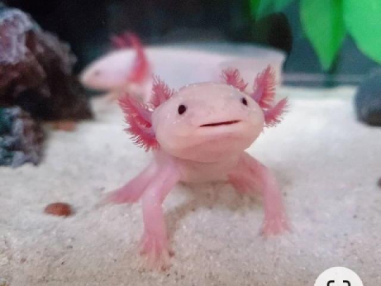

Tubarão Zorro
ele é kawai :3

O zorro-olho-grande é uma espécie de peixe cartilaginoso que se caracteriza por sua enorme cauda. É um organismo de ampla distribuição, com incrível mobilidade e atividade, o que lhe permite se deslocar entre a superfície e as águas profundas com bastante rapidez. A reprodução destes espécimes é o seu maior obstáculo, e ele é considerado um tubarão altamente vulnerável.
Leia mais..
Coelho do Mar
ele é venenoso :3

Conhecido como coelho do mar, Jorunna parva é um molusco, uma lesma do mar que vive nas profundezas do oceano indico e pacífico. O que lembram as orelhinhas de coelho são órgãos sensoriais e se chamam rinóforos, são responsáveis pela detecção de substâncias, auxiliando a lesma na busca por comida e parceiros.
Todo esse ecossistema está ameaçado, é preciso unir forças, dar voz aos indígenas, aos povos tradicionais da floresta! Defender a Amazônia é defender a vida!
Leia mais..
Axolote
ele é um réptel :3

O dia do Engenheiro Eletricista é comemorado no dia 23 de novembro, é uma homenagem aos profissionais responsáveis por toda energia elétrica que é distribuída, fazendo com que a energia chegue da melhor e mais segura forma aos pontos de entrega, sendo assim, foi criado um dia dedicado a profissionais que carregam a grande responsabilidade de manter o funcionamento todas as fontes de energia de um país.
Leia mais..
Foca
ela é fofa :3

O dia 15 de outubro foi escolhido para comemorar o dia do professor, pois em 15 de outubro de 1827, Dom Pedro I, Imperador do Brasil, decretou uma Lei Imperial responsável pela criação do Ensino Elementar no Brasil (do qual chamou “Escola de Primeiras Letras”), e através deste decreto todas as cidades deveriam ter suas escolas de primeiro grau.
assista...